Префектура Фукуи · Сабаэ и Этидзэн · ремёсла
Лак, бумага и гречневая лапша: ремёсла Фукуи, которые можно потрогать и купить
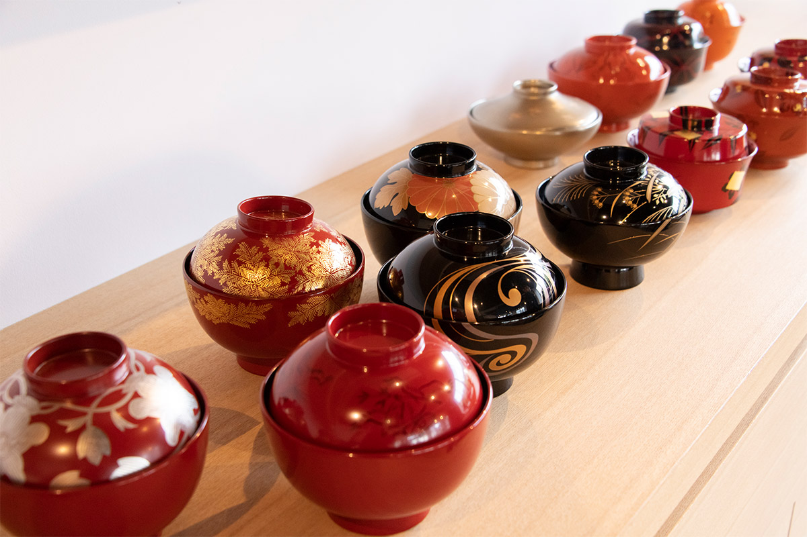
В Фукуи лак, бумагу, ножи и керамику делают в соседних долинах, в радиусе примерно 30 километров. Мы проехали по деревням лака и бумаги, зашли в мастерские и лавки и закончили день тарелкой холодной гречневой лапши.
Край ремёсел
Своя культура в каждой долине
Лак, бумага, ножи, керамика и комоды-тансу делаются в Фукуи с очень давних времён, а лаковые изделия, по преданию, ещё с эпохи курганов. Причину местные видят в природе: префектуру окружают горы, а зимой снег на стороне Японского моря надолго отрезает долины друг от друга. Так в каждой долине сложились свои ремёсла, свой быт и своя кухня.
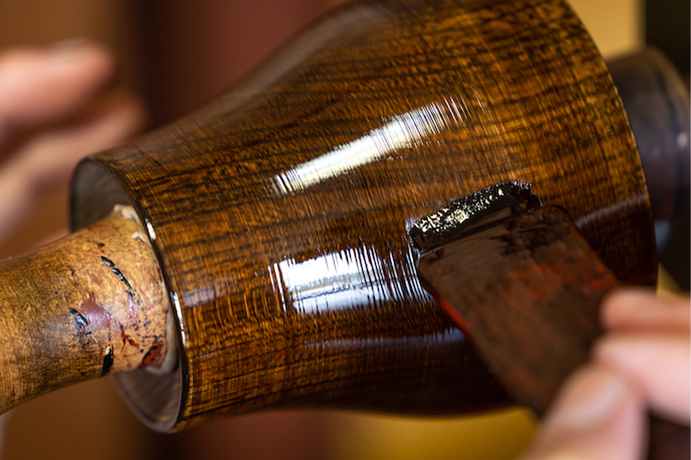
Фукуи к тому же богата едой: краб Этидзэн-гани, рис косихикари, гречневая лапша соба, клубни таро «Камисё сатоимо». Префектуру издавна называли микэцукуни, «кладовой» двора: отсюда везли продукты к столу в Нару и Киото. Ножам Этидзэн у нас посвящена отдельная статья о Takefu Knife Village, а здесь речь пойдёт о лаке, бумаге и лапше.
Лак
Кавада: деревня, где лаком живёт каждый четвёртый
История лака Этидзэн, по преданию, насчитывает около 1500 лет. Мастер из деревни Катаяма, на месте нынешнего города Сабаэ, поднёс чёрную лакированную чашу будущему императору Кэйтай (по традиции он правил в 507–531 годах), и тот велел развивать в деревне лаковое дело. Это мастерство перешло и в промышленное производство: около 80% лаковой посуды для общепита в Японии делают именно здесь.
Главный центр ремесла это район Кавада в Сабаэ. Из примерно 4000 его жителей около тысячи так или иначе связаны с лаком. Мастерские и лавки разбросаны по всему району, и выбирать посуду здесь лучше пешком, заходя то в одну, то в другую.
«Уруси-но сато кайкан»: музей лака
Начать стоит с «Уруси-но сато кайкан», музея лака Этидзэн. Здесь рассказывают историю ремесла и показывают все этапы работы, в мастерских трудятся лакировщики и декораторы, а в магазине продаётся больше тысячи видов изделий: чаши, многоярусные шкатулки дзюбако, подносы, палочки, коробки для бэнто.
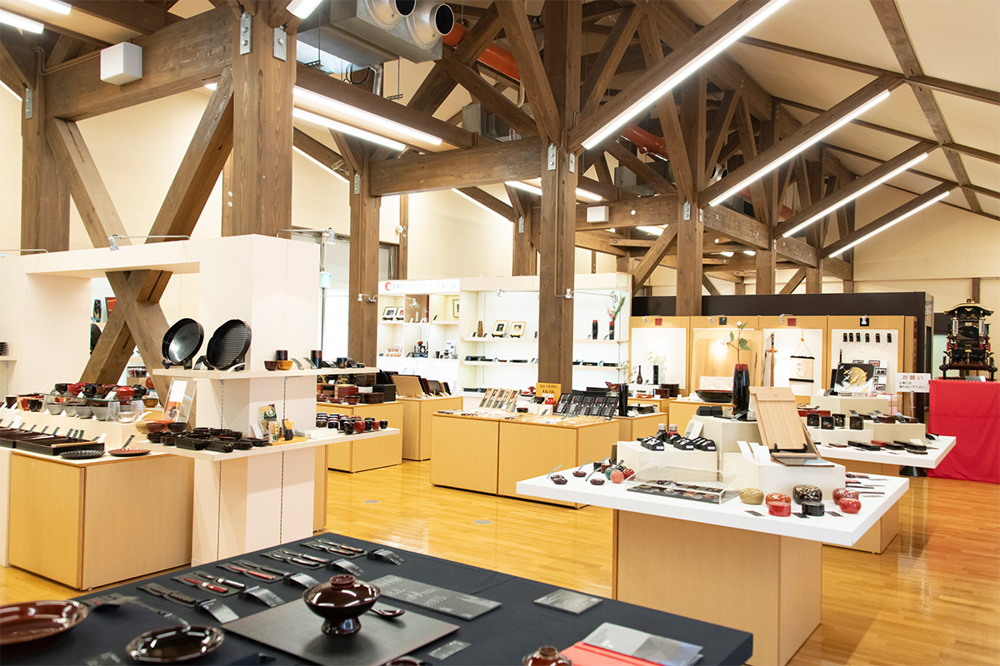
Об истории и технологии нам рассказал глава лаковой фирмы из города Этидзэн. По его словам, классический лак Этидзэн отличает грунт сибу-ситадзи: смесь сока хурмы какисибу с угольным порошком наносят снова и снова, и изделие становится очень прочным.
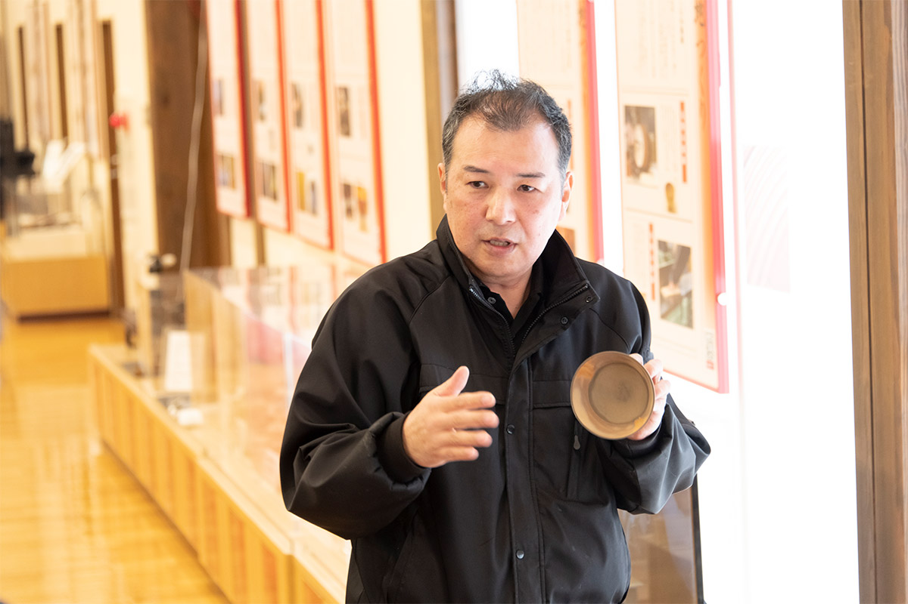
В самом музее работает столовая «Ван-ван», где местную еду подают в лаковой посуде. Готовят её женщины из общества жителей Кавады, и на подносах тесно от местных блюд: «суко», маринованные в уксусе стебли таро, «хадзуси», суши в листьях тунгового дерева, и «ямауни», приправа на основе юдзу и красного перца.
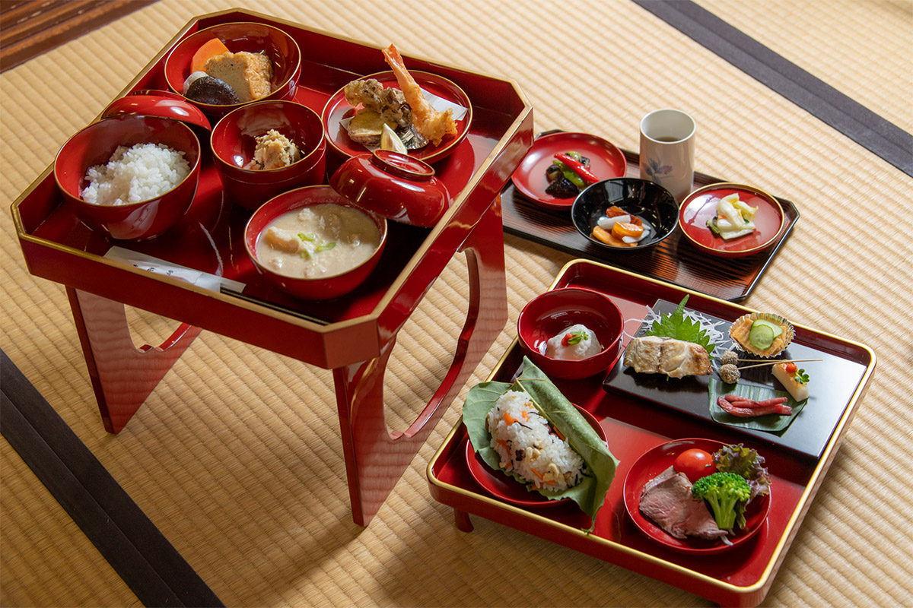
«Уруси-но сато кайкан»
- Адрес
- префектура Фукуи, Сабаэ, Нисибукуро-тё, 40-1-2
- Часы работы
- 9:00–17:00
- Выходные
- четвёртый вторник месяца, 29 декабря–3 января
- Цены / Вход
- обед «Уруси-но сато годзэн» 3000 иен (по записи, от пяти человек), мастер-классы по записи
Shitsurindo: лакировщики с 1793 года
Совсем рядом, в пешей доступности, стоит мастерская Shitsurindo. Её основали в 1793 году как дом нуси-я: такие мастера не только покрывали изделия лаком, но и придумывали их, то есть были, по сути, продюсерами. В 2016 году при мастерской открылась своя галерея. Здесь продаётся посуда марки RIN&CO. спокойных естественных цветов, которую можно мыть в посудомоечной машине, а в глубине устроен шоурум чаш на заказ. Между полками как бы невзначай стоит велосипед, и он тоже покрыт лаком: его сделали вместе с tokyobike.
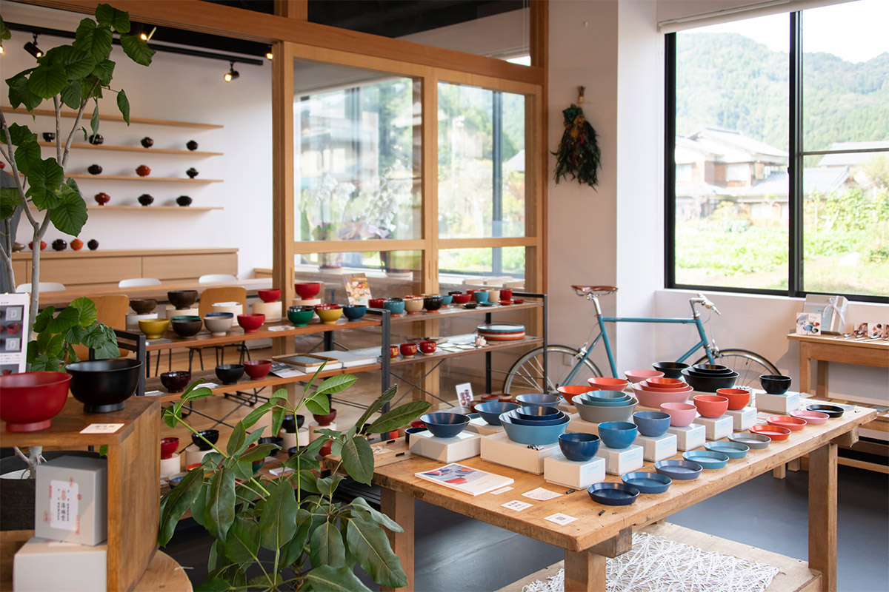
На втором этаже находятся комнаты для разных этапов: для грунта, для протирки, для нижних слоёв. В каждой свой мастер, и за их работой можно понаблюдать.
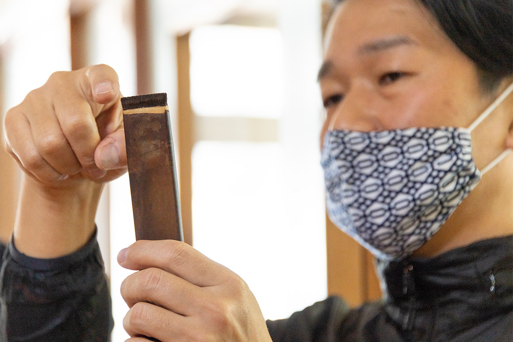
Для средних и финальных слоёв лака нужна особая плоская кисть. Считается, что лучше всего для неё подходят волосы ама, японских ныряльщиц. Найти подходящие волосы трудно, а от кисти во многом зависит, как ляжет лак, поэтому такие кисти становятся редкостью.
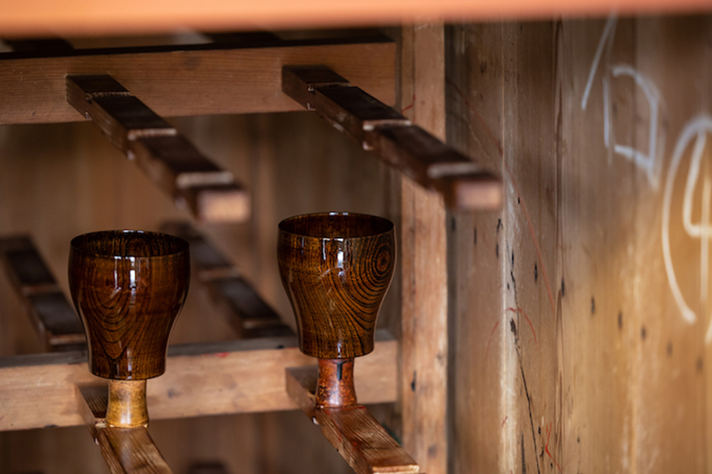
В лаке Этидзэн работа обычно разделена: одни вытачивают деревянную основу, другие покрывают её лаком, третьи украшают. Неподалёку от Shitsurindo мы зашли к токарю, одному из трёх мастеров деревянных основ, которые ещё работают в Каваде. В руках у него была заготовка с беспорядочными бороздками внутри и снаружи, «мидарэсудзи».
«Кажется, что это просто, а выточить так получается не у каждого. Такие чаши и раньше были нужны, и сейчас нужны»
мастер деревянных основ
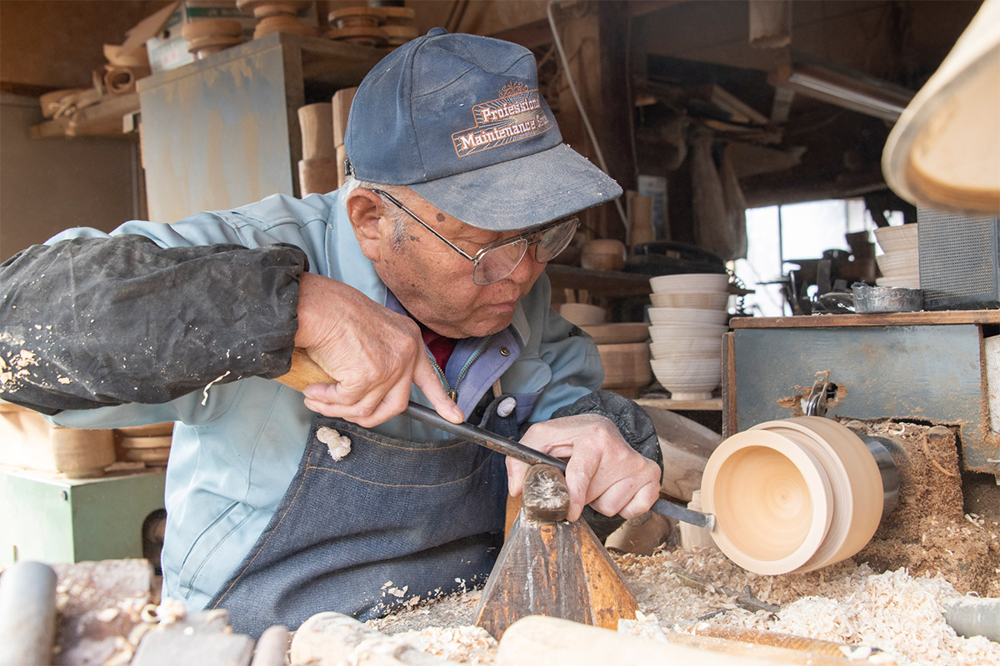
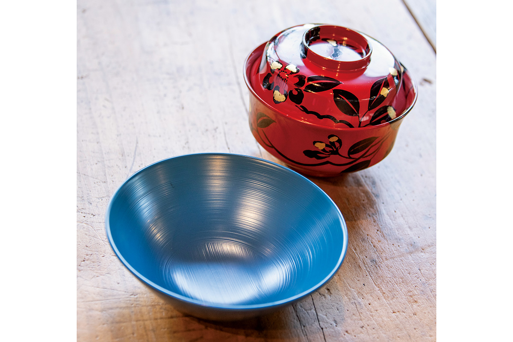
Shitsurindo
- Адрес
- префектура Фукуи, Сабаэ, Нисибукуро-тё, 701
- Телефон
- +81 778-65-0630
- Часы работы
- 10:00–16:00
- Выходные
- нерегулярно
- Сайт
- shitsurindo.com
TSUCHINAO: лак на каждый день
«Лак с годами меняет цвет и фактуру, в этом его прелесть. Пользуйтесь им каждый день»
мастер TSUCHINAO
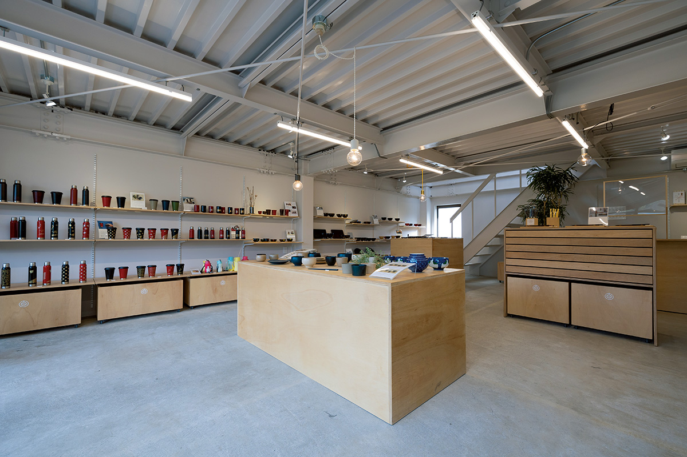
Магазин лаковой мастерской TSUCHINAO открылся при мастерской в июле 2020 года. Обычно в лаке Этидзэн за разные этапы отвечают разные мастера, а здесь всё, кроме вытачивания основы, делают свои лакировщики. Продают посуду, придуманную самими мастерами: серию «Куруму» с протирочным лаком, который сохраняет рисунок дерева, стаканы, покрытые лаком снаружи, вещи для дома и для пикника, а ещё сумки и одежду марки. Прилавок в магазине сделан в форме чаши.
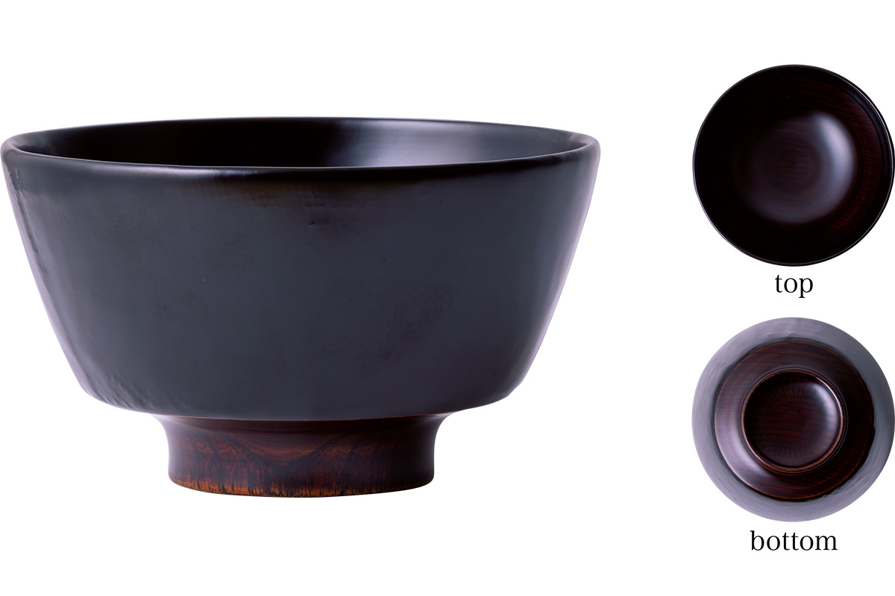
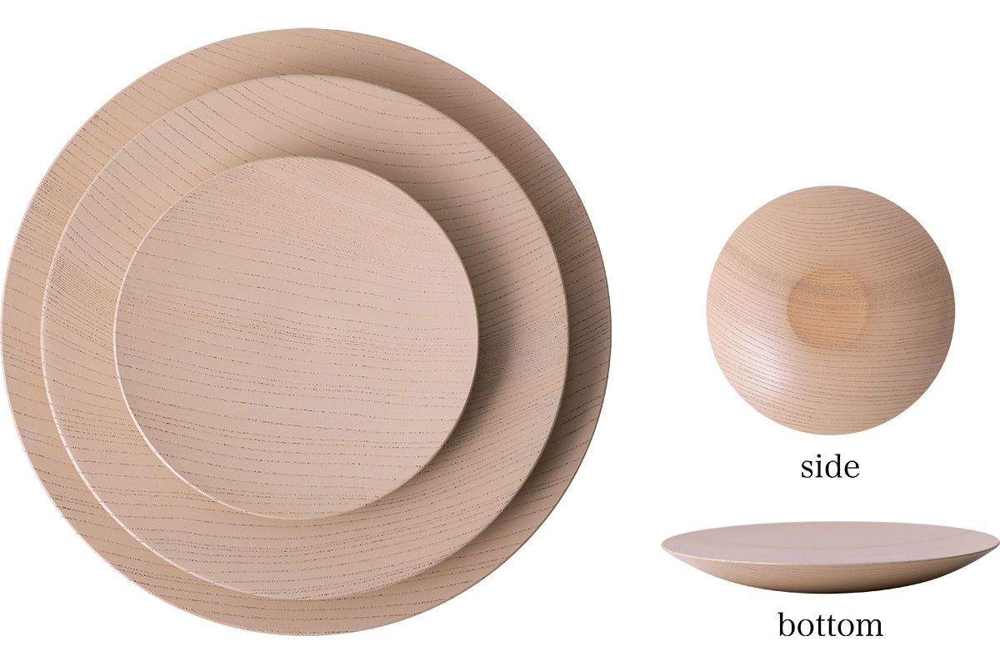
TSUCHINAO
- Адрес
- префектура Фукуи, Сабаэ, Нисибукуро-тё, 214
- Телефон
- +81 778-65-0509
- Часы работы
- 10:00–17:00
- Выходные
- нерегулярно
- Сайт
- tsuchinao.com
Бумага
Имадатэ: родина бумаги Этидзэн-васи
От Кавады до района Имадатэ в городе Этидзэн две долины, но вне снежного сезона на машине сюда всего около 15 минут. Имадатэ с давних времён славится бумагой Этидзэн-васи: её отливают на чистой горной воде. Сначала мы зашли в святилище Окамото-дзиндзя и Отаки-дзиндзя. По преданию, около 1500 лет назад в верховьях здешней реки появилась богиня Кавакамигодзэн и научила жителей делать бумагу. Это, как считается, единственное в Японии святилище бога бумаги, и почитают его по всей стране.
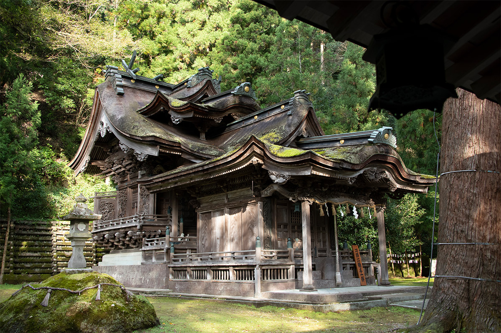
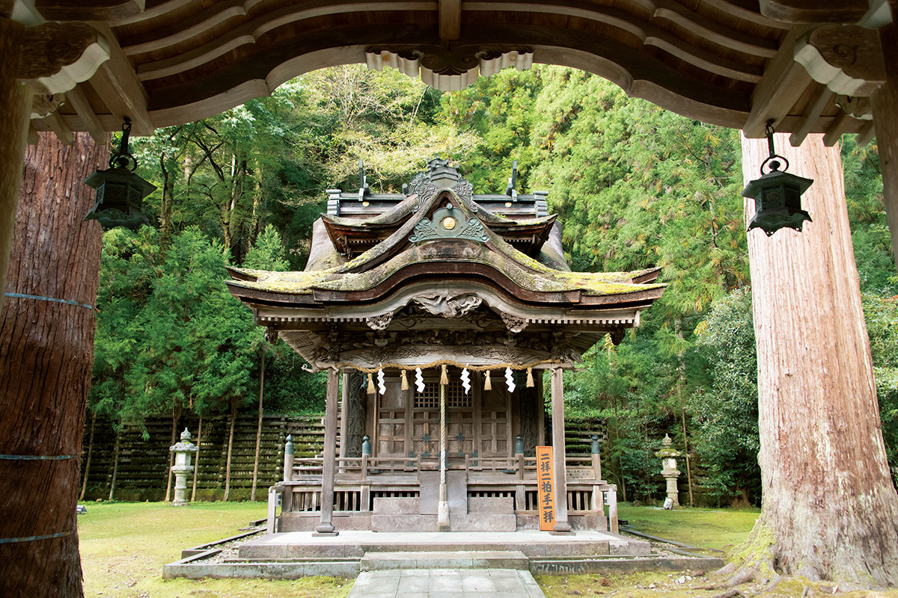
Святилище Окамото-дзиндзя и Отаки-дзиндзя
- Адрес
- префектура Фукуи, Этидзэн, Отаки-тё, 13-1
- Телефон
- +81 778-42-1151 (контора святилища)
Washiya Sugihara: бумага для стадиона
Недалеко от святилища находится Washiya Sugihara. Оптовым торговцем бумагой фирма стала в 1871 году на этом самом месте. Склад-кура эпохи Тайсё в 2017 году переделали в магазин и шоурум, куда пускают только по записи. Здесь продают открытки, почтовую бумагу, коробочки и даже бумажные маски, а для интерьера большие листы, красиво пропускающие свет. Всё чаще бумагу заказывают для отделки отелей, авиакомпаний, банков и ресторанов. Самый известный пример это бумажные светильники Национального стадиона в Токио, построенного по проекту Кэнго Кумы: бумагу для них поставила эта фирма.
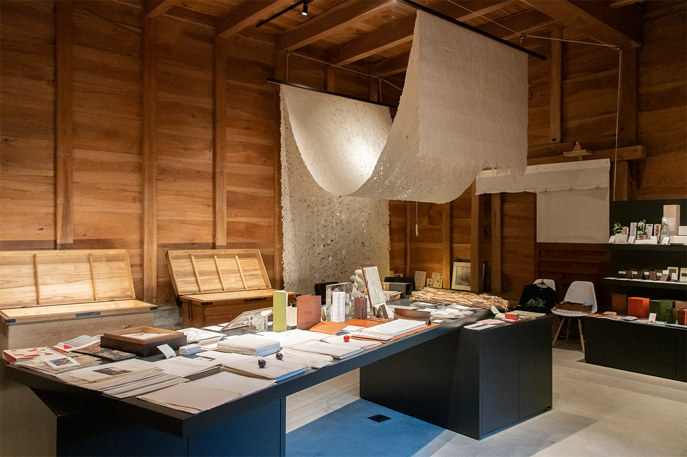
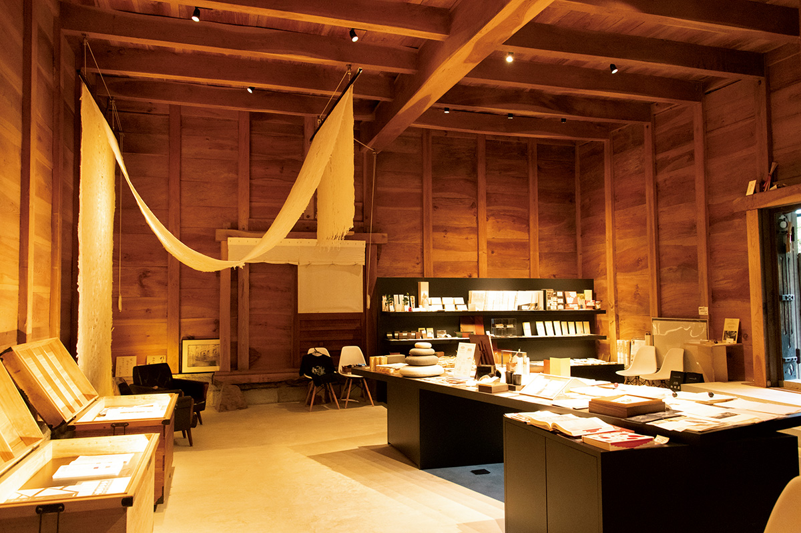
Washiya Sugihara
- Адрес
- префектура Фукуи, Этидзэн, Фуро-тё, 17-2
- Телефон
- +81 778-42-0032 (только по записи)
- Часы работы
- 9:00–17:00 (только в четвёртую субботу месяца)
- Сайт
- washiya.com
Yamatsugi: рельефная бумага в быту
В Имадатэ рядом работают мастерские и бумажные лавки, и каждая делает бумагу своего размера и назначения. Yamatsugi основали в 1868 году, чтобы отливать вручную дорогую бумагу для упаковки подарков и свитков. Здесь в основном работают способом нагасидзуки, при котором массу раз за разом гоняют по сетке, печатают этикетки для сакэ и выпускают вещи из своей бумаги «укигами».
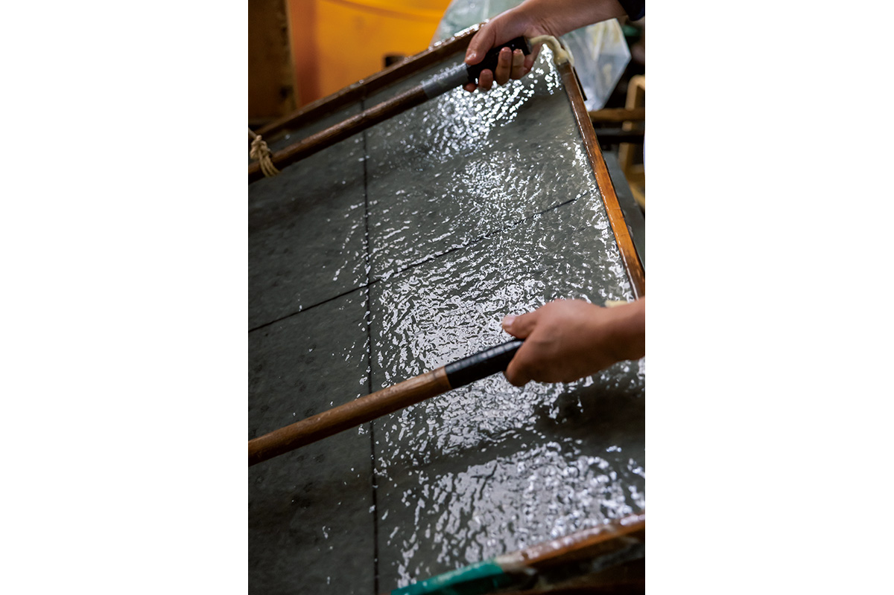
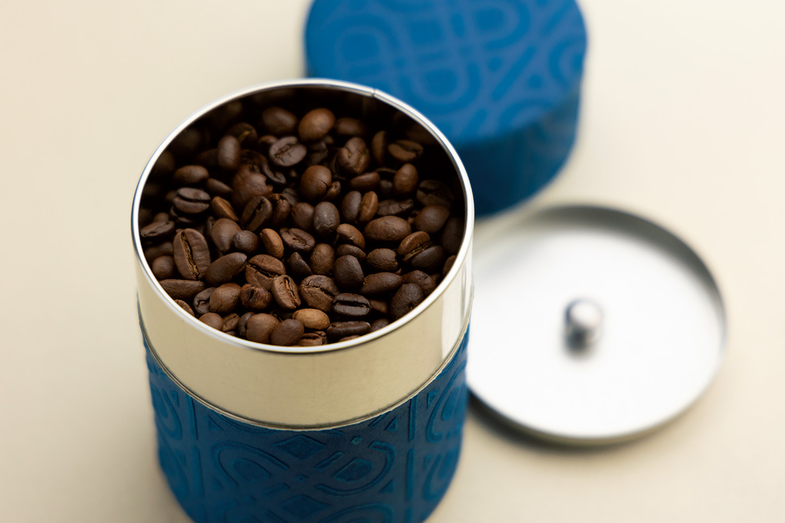
Укигами раньше делали для обоев. Мастерская своим способом выводит в ней глубокий рельеф, который ещё сильнее подчёркивает фактуру бумаги. Мастер Yamatsugi хочет, чтобы бумага Этидзэн снова стала обычной частью жизни, и из укигами здесь делают банки для чая, футляры для визиток и другие вещи. Узор и саму бумагу придумывает собственный дизайнер мастерской.
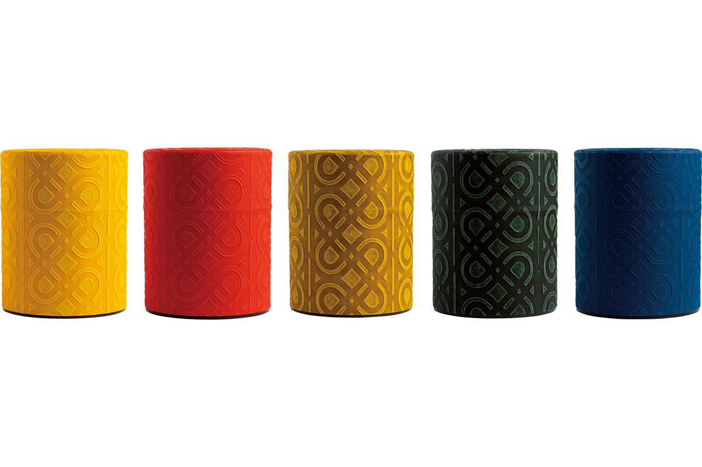
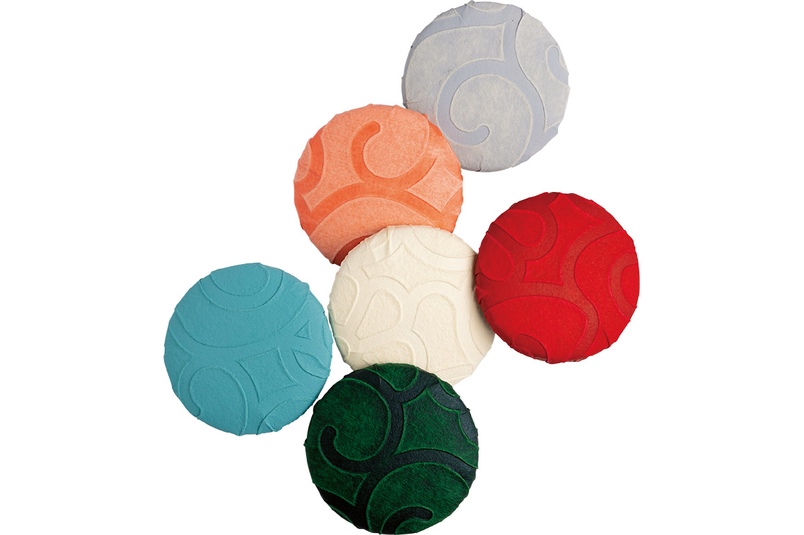
Yamatsugi
- Адрес
- префектура Фукуи, Этидзэн, Отаки-тё, 29-5
- Телефон
- +81 778-42-0553
- Часы работы
- 8:00–17:00
- Цены / Вход
- товары продаются только в интернет-магазине
Еда
Таро и гречка
Во время нашей поездки в 2021 году мать фермера, который выращивает клубни таро «Камисё сатоимо», специально для гостей приготовила домашние блюда (постоянно такого угощения для туристов нет): тушёный таро, красный рис с таро, одэн и суп кэнтин-дзиру. Местные варят клубни, оставляя на них тончайшую кожицу. Она приятно хрустит, а сам таро сладкий и насыщенный, совсем не такой, каким его обычно представляют.
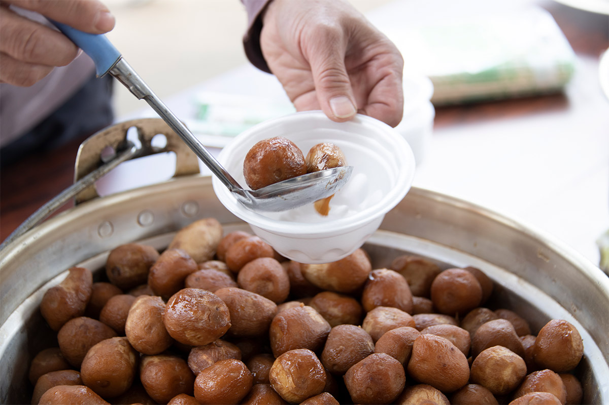
«Этидзэн соба курабу»: слепить лапшу самому
Самое известное блюдо Фукуи это «Этидзэн оросисоба», холодная гречневая лапша с тёртой редькой. Попробовать её, а заодно и сделать своими руками, можно в «Этидзэн соба курабу» в городе Фукуи. Здесь есть мастерская для уроков и зал, где обедают. Под присмотром мастера проходишь все этапы: смешиваешь муку с водой, месишь, раскатываешь и нарезаешь. Готовую лапшу сразу варят и подают холодной или с редькой, а можно забрать её с собой.
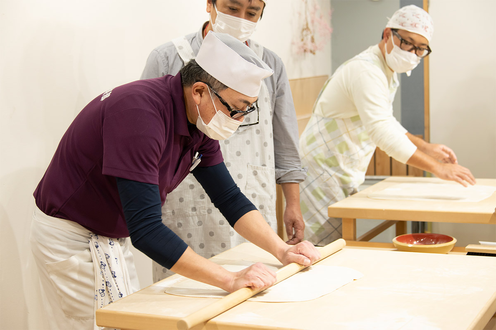
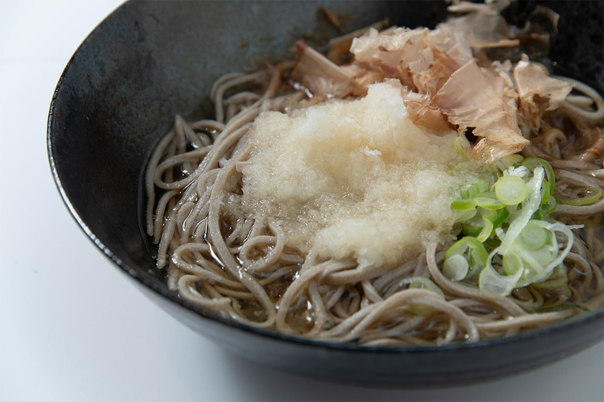
«Этидзэн соба курабу»
- Адрес
- префектура Фукуи, Фукуи, Тюо, 1-10-21
- Телефон
- +81 50-3637-3101
- Часы работы
- 10:00–15:00, обед 11:00–14:00
- Выходные
- вторник
Kamezou: соба из гречихи Маруоки
В Сабаэ стоит зайти в лапшичную Kamezou. Зерно гречихи из Маруоки, района в префектуре Фукуи, здесь мелют сами, и каждое утро хозяин вручную делает лапшу только из гречневой муки, без пшеницы. Бульон варят на основе стружки бонито, и под разные блюда здесь используют около шести его видов. Лапшу подают в посуде из керамики Этидзэн, на подносе лака Этидзэн и с такими же палочками, так что на столе всё сделано в Фукуи. Кроме собы с судати любят и закуски из гречихи.
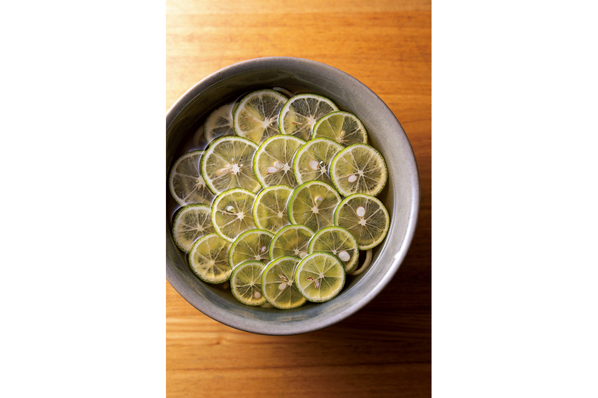
Kamezou
- Адрес
- префектура Фукуи, Сабаэ, Хигаси-Сабаэ, 1-1-3, здание MM6, 1-й этаж
- Телефон
- +81 778-42-8199
- Часы работы
- 11:00–15:00 (последний заказ 14:30), 17:30–21:30 (последний заказ 21:00), до окончания лапши
- Выходные
- вторник (в праздники открыто)
- Сайт
- soba-kamezou.jp
Фото: Садахо Найто.